阴历(lunar)
回忆
- 上次我们可以操作文件和文件夹了
- 复制 cp
- 新建 mkdir
- 删除 rm
- 改名移动 mv
- 我们还可以查询文件和文件夹
- 列表 ls
- 递归查询文件夹 tree
- 详细信息 stat
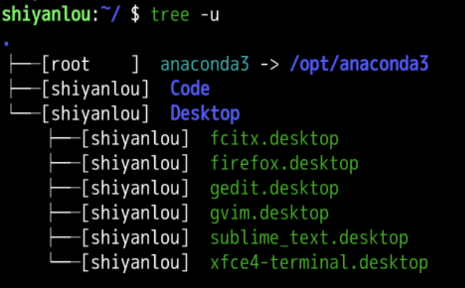


- 这里值为shiyanlou的uid到底是什么呢？
我是谁(whoami)
whoami
whatis whoami
whereis whoami
which whoami
dpkg -S /usr/bin/whoami
- 我是shiyanlou
- shiyanlou是当前系统的userid
- whoami 是一个coreutils的程序
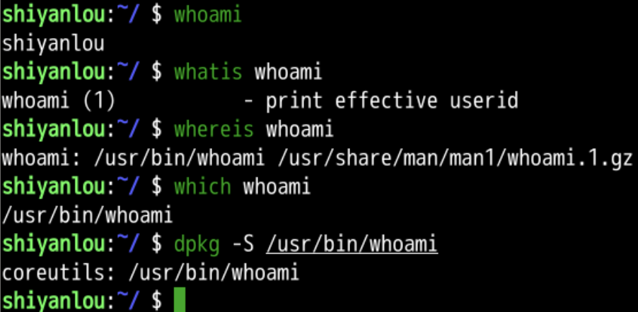
帮助细节
- 这可以说就是没有细节了
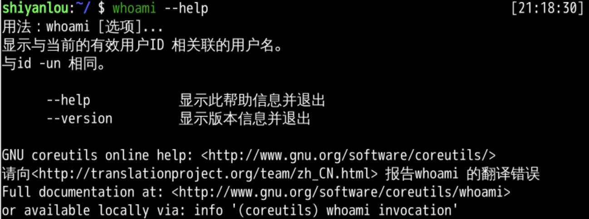
- http://www.gnu.org/software/coreutils/whoami
官网文件
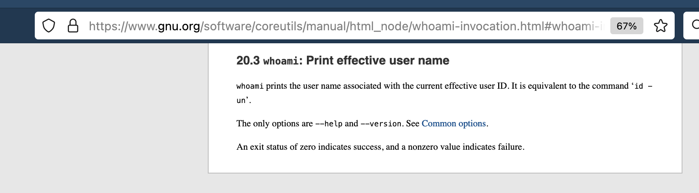
- 看看手册去
更多帮助手册
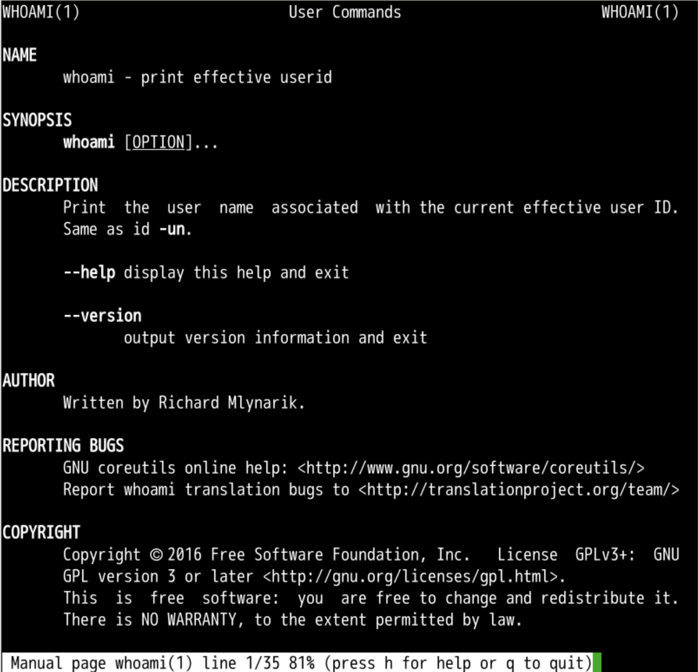
- 看不出什么新东西了
都有谁(who)
who --help
- who显示已登陆的用户信息
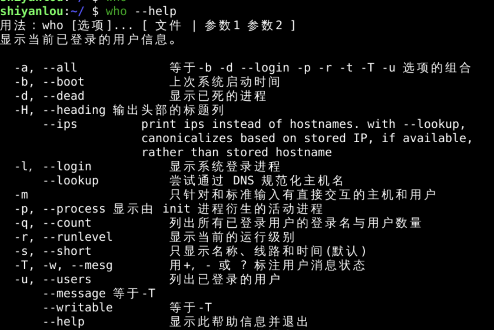
- 还可以看到细节么？
标题
- -H
- 标题
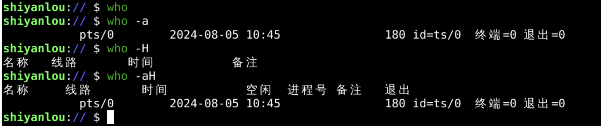
- -q
- 统计
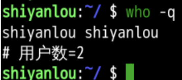
- 能用的参数好像就这么多
- 再细节呢？
man who
man who
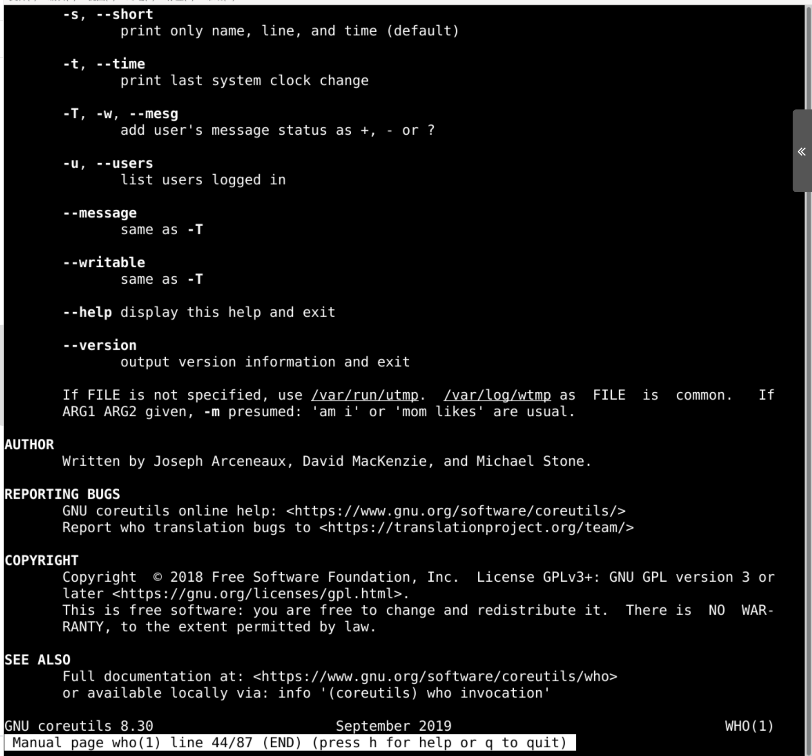
- 好像结果是从/var/run/utmp读到的
直接读取
vi /var/run/utmp
- 设置换行
:set wrap
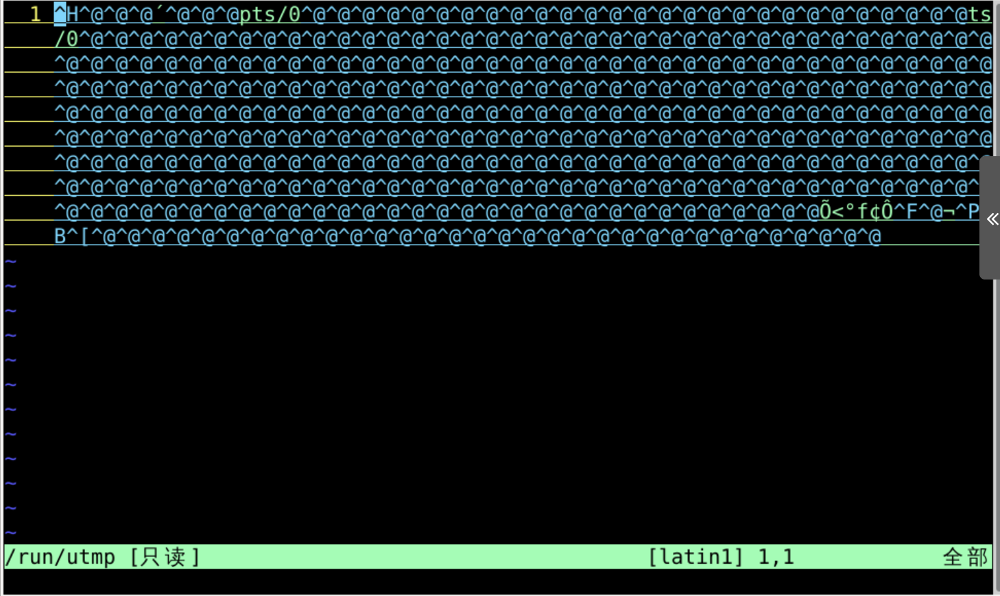
- 还有什么吗？
新命令w
- 这次可以看到更多信息
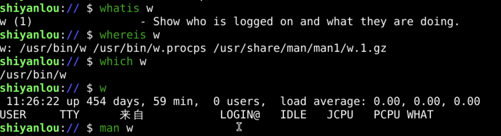
总结 🤔
- 这次了解了三个命令
- whoami
- who
- w
- 最短的最好用
- 可以查看都有谁目前登录到系统中
- whoami就是查看我是谁
- 对应哪个userid
- 可以把所有的用户id列出来么？
- 下次再说👋